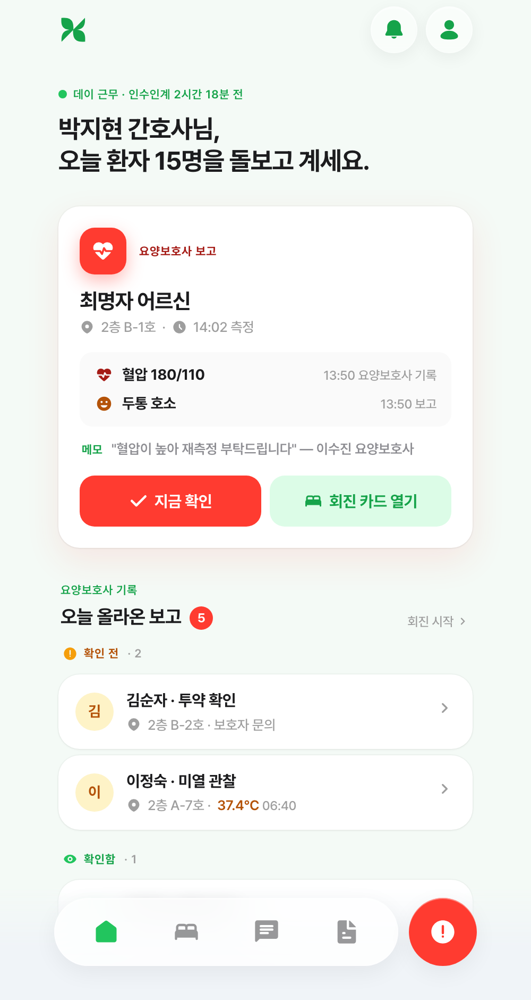

요양보호사 앱
케어 기록
지금 해야 할 일이 맨 위에. 담당 입소자별 진행을 보며 버튼 하나로 기록을 시작합니다.

가족(보호자) 앱
일일 리포트
요양보호사가 남긴 사진과 한마디가 매일 도착합니다. 전화로 묻지 않아도 오늘을 압니다.

의료진 앱
요양보호사 보고 확인
현장 보고와 측정값을 시간순으로 모읍니다. 앱은 판단하지 않고, 확인과 판단은 의료진이 합니다.
네 화면은 같은 시설, 같은 입소자 네 명(박영자 · 최명자 · 김순자 · 이정숙)의 하루를 보여 줍니다. 요양보호사가 한 번 남긴 기록이 가족에게는 안부로, 의료진에게는 확인할 변화로, 어르신에게는 큰 글씨 한 화면으로 도착합니다.



화면은 팀이 직접 구현한 공개 프로토타입입니다. 화면 속 인물 사진은 AI 생성 이미지입니다.